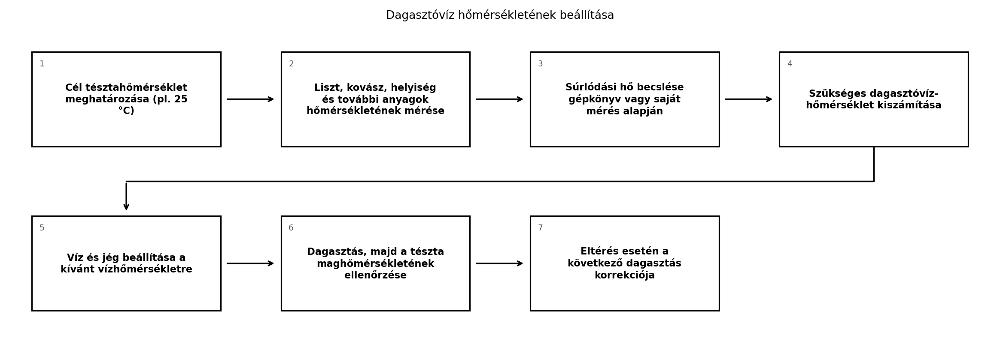

Hajnali fél négykor a pék ugyanazt a kenyérreceptet készíti, mint előző nap. Ugyanaz a liszt, ugyanaz az élesztő, ugyanaz a dagasztógép. Mégis egyik nap gyönyörű, jól átkelt tésztát kap, másik nap viszont a tészta túl hideg, lassan érlelődik, vagy éppen túl meleg, ragacsos, kifut a formából. A hiba leggyakrabban nem a receptben, hanem a hőmérsékletben és a vízmennyiségben keresendő. A dagasztóvíz hőmérséklete az egyik legerősebb kézi szabályozó eszköze a péknek: ha tudjuk, milyen hőmérsékletű tésztát szeretnénk, akkor a víz hőmérsékletével tudjuk a liszt, a helyiség és a gép fűtő hatását ellensúlyozni. Ebben az alfejezetben a dagasztóvíz hőmérsékletének és mennyiségének kiszámítását tanuljuk meg, a kívánt tésztahőmérséklet, a tésztakitermelés (TA), a kovász és a jég figyelembevételével.
Képzelj el egy 100 kg-os adag lisztet, amely 20 °C-os, egy meleg pékségben, ahol a levegő 28 °C, és a dagasztógép minden percben belemelegít a tésztába. Ha a csapból hideg vizet engedsz a dagasztóba, a tészta hőmérséklete a hideg víz és a liszt keverékéből alakul ki, plusz a dagasztási súrlódási hőből. A cél az, hogy a dagasztás végén a tésztahőmérséklet a beállított tartományba essen, például 24–26 °C közé. Ezt a vezérlő feladatot az alábbi egyszerű folyamat mutatja.

Definíció – tésztahőmérséklet.
A tésztahőmérséklet a készre dagasztott tészta belső, maghőmérséklete,
közvetlenül a dagasztás után mérve. Jele
,
°C-ban. Ez az érték szabályozza az élesztőgáz-képződés sebességét, az
enzimek aktivitását, a sikér lágyulását és a tészta erjedési ütemét. A
célérték termékenként és technológiánként eltér, tipikus tanulási példa:
kenyértésztáknál 24–28 °C, hideg késleltetett kelesztésnél alacsonyabb,
gyors élesztős tésztáknál 26–30 °C. (ellenőrizendő: üzemi
technológiai lap)
Definíció – dagasztóvíz hőmérséklete.
A dagasztóvíz hőmérséklete (vagy egyszerűen vízhőmérséklet) az élesztő
feloldására és a tészta folyadékához felhasznált víz hőmérséklete
közvetlenül a bekeverés előtt. Jele
.
Nem összekeverendő a csapvíz hőmérsékletével, ha jég hozzáadása is
szükséges.
Definíció – súrlódási hő.
Dagasztáskor a gép mechanikai munkája a tésztát melegíti. Azt a
hőmérséklet-emelkedést, amely kizárólag a dagasztógép súrlódó, gyúró
munkájából ered, súrlódási hőnek nevezzük. Jele a hőmérsékleti
egyenletben
(kJ), vagy egyszerűsített szabályban
(°C). Értéke géptől, dagasztási fokozattól, tészta tömegétől és
állagától függ. Tipikusan 1–4 °C hőmérséklet-emelkedést okoz, de erős
gépi dagasztásnál ennél nagyobb is lehet (ellenőrizendő:
gépkönyv/üzemi mérés).
Szabály – a kívánt tésztahőmérséklet elérése.
A dagasztóvíz hőmérsékletét úgy választjuk meg, hogy a liszt, a víz, az
esetleges kovász/előtészta és a gép hőhatásainak együttes eredménye a
kívánt tésztahőmérséklet legyen. Ehhez a hőmérlegből indulunk ki, majd a
mindennapi gyakorlatban az egyszerű szorzós szabályt használjuk. A víz
hőmérséklete a kívánt tésztahőmérsékletnél általában magasabb, mert a
hideg lisztet és a helyiséget is melegítenie kell, miközben a gép is
fűt.
Szabály – a tésztakitermelés (TA) és a dagasztóvíz
mennyisége.
A tésztakitermelés a lisztre vonatkoztatott, a vízfelvételt is
tartalmazó mutató. A Százalékszámítás és a lisztre
vetített (sütőipari) százalék alfejezetben tanultak szerint:
Ebből a dagasztóvíz mennyisége egyszerűen kifejezhető:
ahol a tésztához felhasznált összes liszt tömege (kg), pedig a teljes víz mennyisége (kg). Ha a TA például 158, akkor 100 kg liszthez 58 kg víz tartozik.
Szabály – a kovász vizét le kell vonni.
Ha a tésztához kovász is kerül, a kovász készítéséhez már vizet
használtunk. A dagasztóvíz mennyisége ilyenkor:
ahol a kovászba tett víz tömege. A kovászvíz kiszámításához a kovász lisztjét és TA-ját használjuk.
A tésztahőmérséklet nem öncélú szám: közvetlenül befolyásolja a tésztaérés A tésztaérés folyamatai és az átgyúrás alfejezetben tárgyalt folyamatait.
| Tésztahőmérséklet | Gyakorlati hatás |
|---|---|
| Túl alacsony, pl. 18–20 °C | Lassú élesztőszaporodás, lassú gáztermelés, hosszabb kelesztés. Hideg, kemény tészta, nehéz formázni. |
| Optimális, pl. 24–28 °C búzakenyérnél | Egyenletes erjedés, jól fejleszthető sikér, kiszámítható kelesztési idő. |
| Túl magas, pl. 32–34 °C | Gyors, túlzott erjedés, ragacsos, lágy tészta, savanyodás, élesztő íz, romlási kockázat növekedése. |
Higiénia.
A 30 °C feletti tészta kedvez a nemkívánatos mikrobák gyors
szaporodásának, ezért a túl meleg tészta higiéniai kockázat is. Hűtött
alapanyagok, hűtött kovász vagy jég használata esetén is figyelni kell a
kész tészta hőmérsékletét.
HACCP.
A tésztahőmérséklet üzemi (minőségi) ellenőrző pont; CCP csak akkor, ha
a HACCP-terv így határozza meg (ellenőrizendő). Ha a dagasztás után mért
tésztahőmérséklet a beállított tartományon (például 18–30 °C) kívül
esik, a tételt le kell állítani vagy át kell minősíteni
(ellenőrizendő: a pékség HACCP-terve). A hőmérsékletet
a gyártási naplóban rögzíteni kell.
A pontos hőmérleg abból indul ki, hogy a dagasztás végén a tészta hőmérséklete a bekevert anyagok által hozott hő és a dagasztás során bevitt munka eredője. Ha a liszt, a víz, a kovász és egyéb anyagok keverednek, a tészta hőmérséklete közelítőleg:
ahol , , az egyes anyagok fajhője (kJ/(kg·°C)), , , a hőmérsékletük, a további anyagok tömege, pedig a dagasztási munka hőegyenértéke (kJ). A liszt fajhője kb. , a vízé (ellenőrizendő: a konkrét anyagok adott fajhője).
A fenti egyenletet a víz hőmérsékletére rendezve:
Ez a pontos levezetés. A mindennapi pékségi gyakorlat azonban ezt az összetett egyenletet egyszerűsített, tapasztalati alakban használja, mert a liszt, a víz és a kovász tömegaránya, valamint a fajhők sok üzemben hasonló tartományt adnak.
Szabály – szorzós (egyszerűsített)
vízhőmérséklet-számítás.
Kétkomponensű lisztvizes tésztánál, ha külön kovász nincs, a szakmában
elterjedt szorzós szabály:
ahol a dagasztási súrlódási hő °C-ban kifejezett tapasztalati értéke. Ha a dagasztás hővesztesége kicsi, és a gép munkája gyenge, kisebb; erős spirálos dagasztónál nagyobb. Ezt a szabályt üzemi méréssel kell kalibrálni.
Levezetés – honnan jön a 2-es szorzó?
Tekintsünk egy tipikus búzakenyér tésztát: 100 kg liszthez 60 kg vizet
adunk. A liszt hőkapacitása
,
a víz hőkapacitása
.
A teljes hőkapacitás
.
Ha a kovász és egyéb anyag hőjét elhanyagoljuk, a vízhőmérsékletre
rendezett hőmérlegben a tésztahőmérséklet együtthatója
a liszt hőmérsékletének együtthatója pedig
Így a pontos egyenlet közelítően:
ahol a dagasztás súrlódási hőjétől származó tésztahőmérséklet-emelkedés °C-ban (a súrlódási tag ). A szakmában használt 2×-es szabály tapasztalati, a liszt- és vízarányt, a helyiség és a gép hatását együtt tartalmazza; ezért kell üzemenként kalibrálni (a 2. példa adataival a pontos hőmérleg 28 °C-ot, a szabály 32 °C-ot ad). Nem a pontos egyenlet kerekítése: az 1,68 → 2 és 0,68 → 1 eltérés nem kicsi. Minden üzemben a helyi lisztfelvétel, a gép súrlódási hője és a helyiség hőmérséklete szerint kalibrálni kell. ∎
A két módszer eltérését a következő grafikon mutatja 26 °C-os célra, 2 °C súrlódási hőmérséklet-emelkedéssel, 100 kg liszt és 60 kg víz mellett. Mindkét egyenes azt mutatja, hogy melegebb liszthez hidegebb víz kell; 20 °C-os lisztnél a 2×-es szabály kb. 3,3 °C-kal melegebb vizet ad (30 °C), mint a pontos hőmérleg (kb. 26,7 °C), így a tészta a vártnál melegebb lesz. A szürke sáv a csapvíz hőmérséklete alatti tartomány (itt 18 °C, példa): ide eső vízhőmérséklethez jég vagy hűtött víz kell (lásd a jégadagolást lent).
Ezért ha a 2×-es szabállyal számolt víz rendszeresen túl meleg tésztát ad, a súrlódási tagot nem „ötletszerűen” kell növelni, hanem a pontos hőmérleggel vagy üzemi méréssel kalibrálni. A HTML-változat kalkulátorában a cél tésztahőmérséklet, a liszt, a víz és a kovász tömege és hőmérséklete, a súrlódás és a csapvíz hőmérséklete állítható; a kalkulátor mindkét módszerrel kiszámolja a vízhőmérsékletet, szükség esetén a jégadagot és a csapvíz tömegét, és figyelmeztet, ha 0 °C alatti (jéggel sem elérhető) vagy az élesztőt károsító meleg víz jönne ki.
Megjegyzés – több anyag esetén.
Ha a tésztába meleg kovász, tojás, zsiradék vagy más meleg anyag kerül,
a fenti hőmérleg pontosabb. A gyakorlatban ilyenkor vagy a pontos
tömegekkel számolunk, vagy a
képletet a kovász hőmérsékletével korrigáljuk. A kovászos tésztánál a
szabályt kiterjeszthetjük például:
de ez csak közelítés. A biztonságos eljárás: minden hőmérsékletet mérünk, és az első dagasztás után a mért tésztahőmérséklet alapján a következő vízhőmérsékletet az eltérés mértékében korrigáljuk.
Szabály – a TA és a víz mennyisége
összefüggése.
A tésztakitermelés definíciójából levezetve a lisztre vetített
vízfelvétel
százalékpont. Tehát:
Példa 1 – dagasztóvíz mennyisége egyszerű
tésztában.
Adott:
,
.
Keresett:
.
Ellenőrzés: . Az érték egyezik a megadott TA-val. A tészta tömege itt a liszt és a víz összege, 120 kg, mert más anyag nincs a keverékben.
Példa 2 – dagasztóvíz hőmérséklete szorzós
szabállyal.
Adott: kívánt
,
mért
,
üzemi súrlódási hő
.
Keresett:
.
Tehát a vizet -ra kell beállítani. Ha a csapvíz ennél hidegebb, keveréssel vagy melegítéssel állítjuk be; ha melegebb, akkor jégre van szükség.
Példa 3 – kovászos tészta teljes vízfelvétele.
Adott: teljes liszt
,
a liszt 30%-át (30 kg) rozskovászba tesszük, a kovász TA-ja 200 (vagyis
30 kg liszthez 30 kg vizet teszünk). A tészta teljes TA-ja 165.
Először a teljes víz mennyisége:
A kovászvíz a kovász lisztjéből és TA-jából:
A dagasztóvíz:
Ellenőrzés: a kovászban 30 kg liszt + 30 kg víz; a tésztához adunk még 70 kg lisztet (összes liszt 100 kg) és 35 kg vizet. A tészta összes víz 30 + 35 = 65 kg, TA = (100 + 65)/100 · 100 = 165, az eredmény egyezik a kiinduló adattal.
Nyári kánikulában, meleg liszt és meleg helyiség mellett a kiszámított vízhőmérséklet olyan alacsony lehet, hogy a csapvíz önmagában nem elég hideg. Ilyenkor jeget adunk a vízhez. A jég a víz tömegének egy részét 0 °C-on olvadás közben hűti. A szükséges jég mennyiségét a hőmérlegből számítjuk.
Szabály – jégadagolás számítása.
Legyen
a teljes szükséges vízmennyiség (kg),
a csapvíz hőmérséklete,
a kívánt vízhőmérséklet,
a jég olvadáshője
(),
.
Feltéve, hogy a jég 0 °C-os, és a felhasznált jég a keverékben teljesen
elolvad:
A fennmaradó rész csapvíz: . Ha a jég fagyott hőmérséklete nem 0 °C, a képlet bonyolódik; üzemben ezért inkább hűtőtartályos vizet, jégpehely-automatát és mérést használnak (ellenőrizendő: üzemi adatlap).
Példa 4 – jégadag számítása.
Adott:
,
,
a kívánt vízhőmérséklet
.
Keresett:
.
Tehát kb. jeget adunk csapvízhez. Ellenőrzés: az olvadáshő , a csapvíz lehűlése ; a különbség a jég olvadékának -ra melegítése, ahogy a képletben benne van. A gyakorlatban mérjük a vízhőmérsékletet a jég elolvadása után, mielőtt a dagasztóba engedjük.
Bármilyen gondos a számítás, a végső mérést nem hagyhatjuk el. A Tömegmérés, mérlegek és hőmérsékletmérés alfejezetben tanultak szerint:
Gépbiztonság.
A dagasztógép mérés közbeni megállítása, a tészta tapintása vagy a
hőmérő szonda behelyezése előtt a gépet mindig le kell állítani, és meg
kell várni a forgó kar teljes megállását. Futó dagasztókar mellett a
tésztába nyúlni tilos. A víz hőmérsékletének beállításakor forró víz és
gőz veszély: tartsuk a kezet, az arcot a kiömlő forró víztől távol, és
viseljünk védőkesztyűt, ha forró vizet kezelünk.
Egy vidéki kis pékségben június elején a rozsos kenyér tésztája reggelente túl meleg lett: 30–31 °C-ot mértek dagasztás után. A pék eddig 30 °C-os, „langyos” csapvizet használt, a kenyér héja halvány, a bélzete ragacsos, az íze enyhén savanyú volt. Az ellenőrzés során kiderült: a liszt a raktárban 28 °C-os, a dagasztógép spirálkarja pedig erősen melegít, a súrlódási hőt korábban nem vették figyelembe. A gépkönyv és az üzemi mérés alapján a súrlódási hőt 3 °C-ra becsülték. A cél 26 °C tésztahőmérséklet volt. A számítás:
A régi gyakorlattal a szabály inverze is a mért értéket adja: . Ha a csapvíz 18 °C-os, hűteni nem kell, elég a hideg és a meleg víz keverése 21 °C-ra. Ha a csapvíz nyáron 24 °C-os, a 60 kg vízhez jég is kell: (tanulási közelítés). Amikor a vizet 21 °C-ra állították, a tészta hőmérséklete 26 °C lett, a kelesztési idő visszatért a tervezett 45 percre, a termékminőség helyreállt. A hiba az volt, hogy a lisztet és a gépet nem vették figyelembe (az eset tanulási példa).
Hiba. Ez az eset jól mutatja, hogy nem a tészta melegét kell megszokni, hanem a hőmérleg szerint beállítani a vizet. A túl meleg tésztából gyors, túlerjedt, gyenge vázú termék lesz, a túl hideg tésztából hosszú, késve érő, formázhatatlan tészta.
Cél: A dagasztás végén a tésztahőmérséklet a
technológiai lapon rögzített tartományba essen.
Eszközök, anyagok: hitelesített digitális hőmérő (szúró
és felületi), jég, meleg víz forrása, keverő edény, higiéniai
kéz-eszközök, védőkesztyű forró vízhez, jelölő, gyártási napló.
Higiénia. Munkaruha, hajháló, kézmosás, a hőmérő szondáját mérés előtt és után fertőtlenítjük. A víz hőmérsékletét nem kézzel, hanem hőmérővel ellenőrizzük.
Gépbiztonság. A dagasztógép mérésére és a hőmérő szúrószondájának használatára csak leállított, reteszelt, biztosított gépnél kerülhet sor. Hőmérő szonda hosszú, vékony része törhet; ne erőltessük kemény tésztába, mert sérülést okozhat.
Lépések:
Dokumentálás. A gyártási naplóba: liszt hőmérséklet, kovász hőmérséklet, vízhőmérséklet, súrlódási hő tényező, jég mennyisége, tésztahőmérséklet, és az esetleges korrekció. HACCP-nyilvántartásban a tésztahőmérsékletet a CCP-monitoring részen tüntetjük fel, ha az üzemi terv szerint kritikus pont.
A dagasztás végét követő tésztahőmérséklet a folyamat minőségjelzője. Jó tészta:
Ha a tészta túl meleg, a felület gyorsan kenődik, a gáztermelés túlzott, a bélzete sűrű, savanykás lehet. Ha túl hideg, a tészta kemény, a térfogatnövekedés lassú, a kelesztési idő nő.
1. feladat (A)
Egy búzakenyér tészta kívánt hőmérséklete 26 °C, a liszt hőmérséklete 20
°C, a súrlódási hő 2 °C. Számítsd ki a dagasztóvíz hőmérsékletét a
szorzós szabállyal.
2. feladat (A)
TA = 162, liszt = 120 kg. Mennyi a teljes vízmennyiség? Határozd meg a
tésztakitermelés ellenőrzését is.
3. feladat (B)
Rozskenyérhez 100 kg teljes lisztet használunk. A rozsos kovászba a
teljes liszt 40%-a kerül, a kovász TA-ja 200. A tészta teljes TA-ja 168.
Számítsd ki: a) a teljes víz mennyiségét, b) a kovászvizet, c) a
dagasztóvizet.
4. feladat (B)
Egy tésztához 75 kg lisztet (18 °C), 30 kg vizet (ismeretlen
hőmérséklet), 15 kg kovászt (24 °C) és 2 kg sót (20 °C) kell bekeverni.
A fajhők: liszt 1,7 kJ/(kg·°C), víz 4,18 kJ/(kg·°C), kovász 3,0
kJ/(kg·°C), só 0,9 kJ/(kg·°C). A dagasztás hőtermelése 2000 kJ. A kívánt
tésztahőmérséklet 27 °C. Számítsd ki a szükséges vízhőmérsékletet a
pontos hőmérlegből.
5. feladat (C) Egy pékségben a tésztahőmérséklet 30 °C lett, pedig a pék a vizet 30 °C-ra állította. A liszt hőmérséklete 22 °C, a cél 26 °C lenne. A súrlódási hőt 2 °C-nak gondolták. Mi lehet a hiba? Mennyi legyen a vízhőmérséklet, ha a súrlódási hő valójában 8 °C (hosszú, intenzív spirálos dagasztás)?
6. feladat (D) Nyári melegben a szükséges dagasztóvíz hőmérséklete 8 °C. A csapvíz 24 °C-os, a teljes vízmennyiség 90 kg. Számítsd ki, hány kg jeget kell adni a vízhez, és mennyi maradjon a csapvízből? (Vegyük a jég olvadáshőjét 334 kJ/kg-nak, a víz fajhőjét 4,18 kJ/(kg·°C)-nak.)
Önellenőrzés – válaszok:
1. feladat megoldása
Adott: , , . Képlet: . Behelyettesítés: . Ellenőrzés a szabály inverzével: , tehát a számítás egyezik a céllal.
2. feladat megoldása
Adott: , .
Ellenőrzés: . Helyes.
3. feladat megoldása
a) Teljes víz:
b) A kovász lisztje: . Kovász TA = 200, tehát a kovászvíz:
c) Dagasztóvíz:
Ellenőrzés: tésztához adunk még 60 kg lisztet és 28 kg vizet; összes liszt 100 kg, összes víz 40+28=68 kg; TA = 168, megfelel.
4. feladat megoldása
Adott: , , ; , , ; , , ; , , ; ; .
A hőegyensúlyi egyenlet:
Nevező: .
A számlálóban az ismert anyagok hője:
; ; ; . A víz hője: .
Így:
A jobb oldal számlálójának állandó része: kJ.
Átszorozva:
Kivonás után:
A szükséges vízhőmérséklet kb. 21 °C. Ellenőrzés: a kapott értéket visszahelyettesítve ; számláló ; hányados , vagyis a cél-tésztahőmérséklet teljesül.
5. feladat megoldása
A 2×-es szabály inverze: – ez egyezik a mért tésztahőmérséklettel, tehát a hiba az alábecsült súrlódási hő (2 °C helyett 8 °C). (Ha a 30 °C-os víz mellett a mérés ennél jóval magasabb volna, először a hőmérőt kell ellenőrizni.) A helyes vízhőmérséklet:
Tehát kb. 22 °C-os vizet kell használni; a szabály tapasztalati, ezért az eredményt üzemi méréssel kalibrálni kell.
6. feladat megoldása
Adott: , , , , .
Számláló: kJ/kg. Nevező: kJ/kg. Arány: . Jég: . Csapvíz: .
Ellenőrzés: a jég tömegének hűtőhatása a csapvíz 16 °C-os lehűtésére nagyjából arányos; a gyakorlatban a hőmérővel ellenőrzött érték a mérvadó.
A tésztahőmérséklet a dagasztás egyik legfontosabb vezérlő paramétere: meghatározza az élesztőgáz-képződést, az enzimek munkáját, a tésztaérés ütemét és a termékminőséget. A kívánt tésztahőmérsékletet a liszt, a víz, a kovász, a helyiség és a dagasztási súrlódási hő együttesen alakítja ki. A szükséges dagasztóvíz-hőmérsékletet a pontos hőmérlegből vagy a gyakorlati szorzós szabályból számítjuk:
A dagasztóvíz mennyiségét a TA-ból számítjuk:
és ha kovász is van, a kovászvíz levonásával kapjuk a friss dagasztóvizet. Ha a kiszámított vízhőmérséklet nagyon alacsony, jeget adagolunk, a hőmérleg alapján. A dagasztás után a tészta maghőmérsékletét mindig mérjük és dokumentáljuk; az eltérésből a következő dagasztóvíz hőmérsékletét korrigáljuk.
Továbbvitt eredmény. A dagasztóvíz-hőmérséklet és -mennyiség számítását használjuk a Dagasztási módok és a fajlagos dagasztómunka alfejezetben a gépbeállítások értékeléséhez, a Anyagnorma, rendelésből anyagszükséglet és dagasztásonkénti anyagmennyiség alfejezetben a dagasztásonkénti pontos beméréshez, valamint a Kis- és nagytömegű tészta dagasztása kézzel és géppel gyakorlati fogásaihoz.
Az alfejezetben szereplő hőmérsékleti célértékek, súrlódási hő, fajhők, TA-értékek és jégolvadási számok tanulási példák, nem hatósági előírások. Ellenőrizendő kiadás előtt: